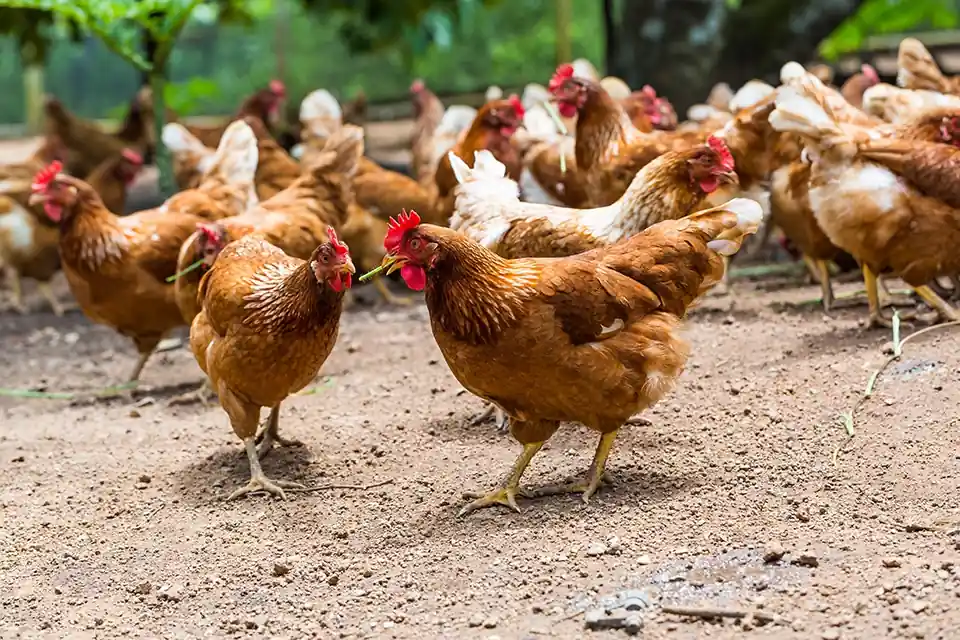

Juma A. Robert
Managing Director
We are Jubesa Farm Tanzania Limited, a private Tanzanian company focused on agriculture, resource development, and trade. We build productive, sustainable operations that create value for our partners, customers, and communities.
The company
We are a Tanzanian company established around a simple idea: opportunity grows when production, resources and enterprise move together. Our activities span agricultural production and services, natural-resource development, and commercial trade — creating a foundation for work that begins with the land and reaches beyond it.
About usAgriculture is at the heart of what we do. We engage across a diverse range of agricultural activities, from the production of maize, avocado, bananas and plantains, beans, rice, ginger, mixed cereals, sugar cane, and watermelons to field preparation, crop treatment, spraying, and harvesting.
Our company activities extend into mining and natural resources. We engage across a diverse range of resources, including gold, copper, platinum, tanzanite, other precious metals, chemical metals, and mineral fertilizers, with a focus on responsible development and commercial value.
What we produce matters. Where it goes matters too. Our business activities include wholesale and retail trade in agricultural products, garments, and commercial goods. From agricultural produce to clothing and accessories, we connect products with the markets they serve.
Looking ahead
We have a vision to become a leading Tanzanian company in agriculture, natural resources, and commerce, creating sustainable value and long-term growth.

What drives us
We develop opportunities across agriculture, natural resources, and commerce through responsible operations, strong partnerships, and long-term investment.

How we work
We focus on efficient operations, responsible resource use, and sustainable growth across every area of the business.

What guides us
Integrity, responsibility, quality, innovation, and long-term thinking guide how Jubesa operates and grows.

Built to last
Jubesa is committed to developing productive businesses, creating opportunities, and contributing to sustainable economic growth in Tanzania.

The people behind the work
Jubesa is led by a team focused on building productive operations, developing opportunities, and creating long-term value across the business.
LeadershipManaging Director
Director
Operations Director